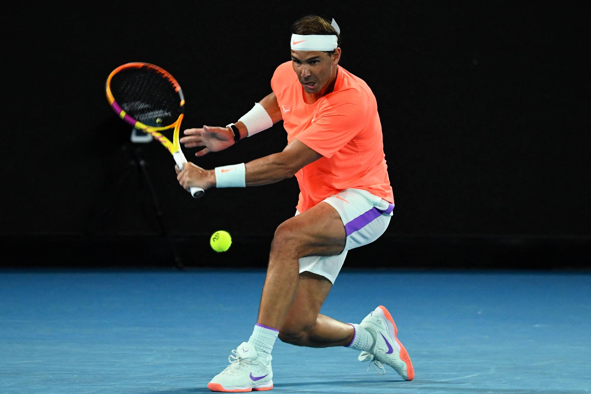
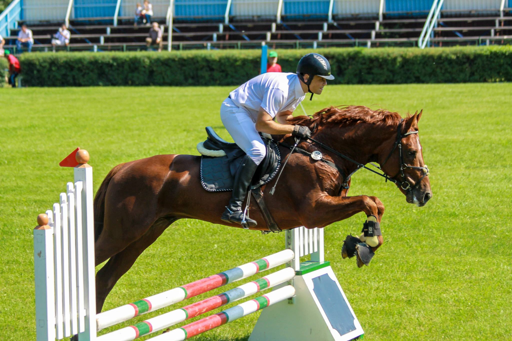

Activitati practice
Tennis

Despre Tennis Tenisul este un sport cu racheta care poate fi jucat individual împotriva unui singur adversar (simplu) sau între două echipe a câte doi jucători (dublu). Fiecare jucător folosește o racheta de tenis pentru a lovi o minge de cauciuc acoperită cu fetru peste sau în jurul unui fileu și în terenul adversarului. Obiectivul jocului este să manevreze mingea în așa fel încât adversarul să nu poată juca o întoarcere validă. Jucătorul care nu poate întoarce mingea nu va câștiga nici un punct, în timp ce jucătorul opus va câștiga.
Fotbal
 Despre fotbal Inainte de tennis am practicat 6 ani fotbal. Fotbalul este un sport de echipa ce se dispută între două echipe alcătuite din 11 jucători fiecare. La începutul secolului al XXI-lea era jucat de peste 250 de milioane de jucători în peste 200 de țări, ceea ce îl face cel mai popular sport din lume.
Despre fotbal Inainte de tennis am practicat 6 ani fotbal. Fotbalul este un sport de echipa ce se dispută între două echipe alcătuite din 11 jucători fiecare. La începutul secolului al XXI-lea era jucat de peste 250 de milioane de jucători în peste 200 de țări, ceea ce îl face cel mai popular sport din lume.
despre fotbal
- 1 Legile jocului au fost formate în Anglia de The Football Association in 1863
- 3 unde a primit denumirea de association football, pentru a nu se confunda cu numele altor forme de fotbal existente în acele timpuri
- 4 printre care fotbalul american sau fotbalul australian. În aceste zone este cunoscut și sub numele de soccer, termen originar din Anglia
- 5 apărut în anii 1880 ca o abreviere Oxford “-er” a cuvântului „asociație”.
Obiecte preferate si nota
| Romana |
L.italiana |
Fizica |
Istoria |
Matematica |
| 9,73 |
9,80 |
9,21 |
8,95 |
9,03 |
Alte hobbyuri
Activitatile
- Pictura
- echitatie
- Muzica
- Calatorii
- Privirea filmelor
- Pimbari cu familia

Sfarsit!
Mardari Dumitru cl.11-A"A"